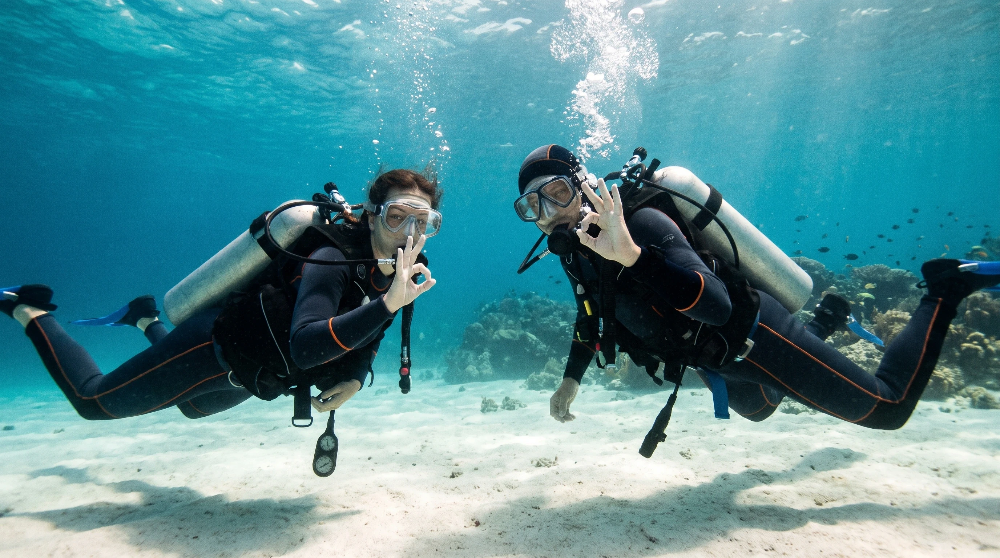
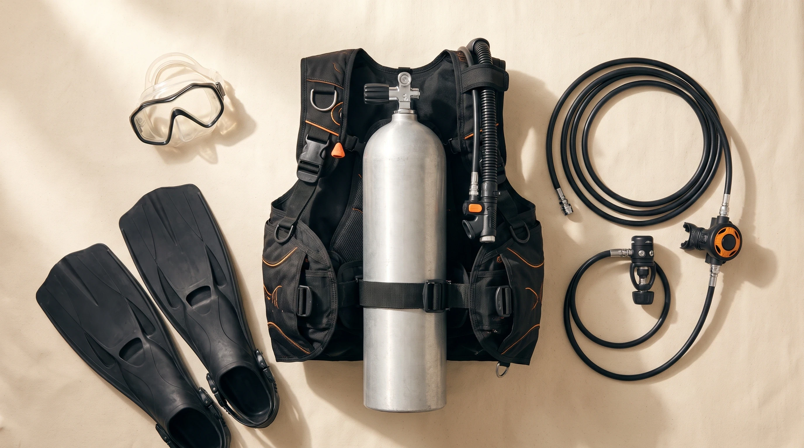
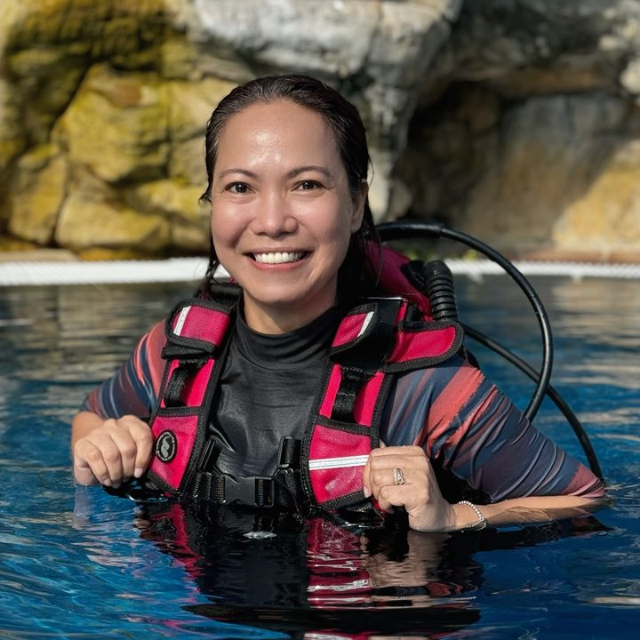
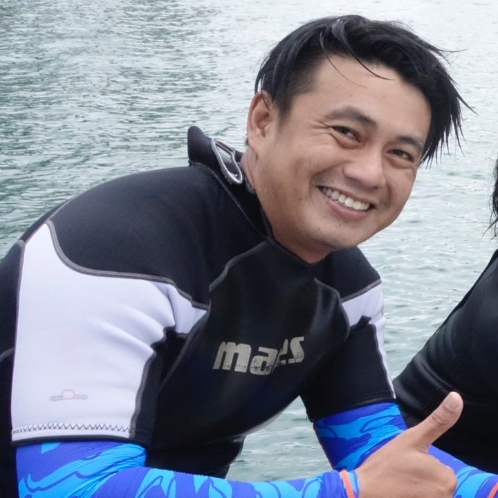
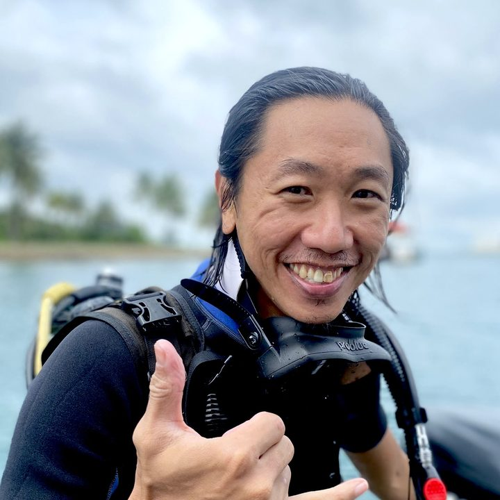
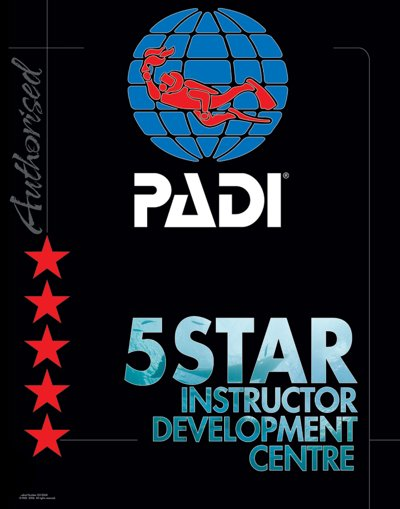
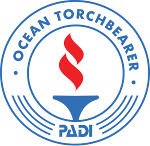
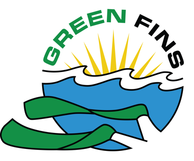

PADI 5 STAR INSTRUCTOR DEVELOPMENT CENTRETURTLE BUDDY
TURTLE BUDDY
DIVERS
Explore local. Dive fun. Learn well. PADI courses in Singapore waters, from our own boat.
OUR BASEKAKI BUKIT,
SINGAPORE
SINGAPORE
SEA DIVESRSYCPOOLRAFFLES MARINA
SCROLL TO BEGIN↓
01OUR KITPRE-DIVE
PRE-DIVE
CHECK.
Serviced in-house to ISO and manufacturer standards.
Check your kit. Check your buddy.
PRE-DIVE CHECK
TURTLE BUDDY DIVERS / KITREADY FOR WATER
01 / 05BC fit and straps
01BC✓
02REGULATORREG.+
03MASK+
04FINS+
05TANK+
OPEN WATER18 M
ADVANCED30 M
GEAR CHECKED. BUDDY READY.KEEP SCROLLING TO ENTER THE WATER ↓
02ENTRY / BACK ROLLWITH YOUR BUDDY,
WITH YOUR BUDDY,
INTO THE WATER.
DEPTH00.0MREADY FOR ENTRY
TURTLE BUDDY DIVERSCONTINUE THE DIVE ↓
03THE DIVE NO DECO
DEPTH6.0M
DIVE TIME0:00
AIR200BAR
01 / SINGAPORE
PULAU HANTU
Different critters and nudibranchs at each site.
FIVE DIVE SITES ON ONE ISLANDHOME OF SINGAPORE DIVERS
OUR BOAT. OUR DIVES. OUR FUN.LOCAL DIVE SITES
04SURFACE↑ TOWARD THE SURFACE
RETURNING TO THE SURFACERETURNING
RETURNING
TO THE SURFACE.
One stop for all your diving needs.

Learn close to home
Our own boat

100% safe equipment
We have fun, and stay in tune with PADI standards.

Rashina Campos

Raihan Omar

Leonard Chang
Where divers come to learn well.
We are a PADI 5 Star Instructor Development Centre, from Open Water certification all the way to Instructor level training. We have also qualified for the PADI Professional Image Evaluation, and we are proud Green Fins supporters.



What divers say on Google 5.0 from 170 reviews
I first did two fun dives with Turtle Buddy and had such a great experience that I decided to complete my PADI Rescue Diver course with them.
I’ve just completed my PADI Open Water course with Turtle Buddy Divers, and I highly recommend them!!!
My three kids have just completed their open water PADI certification with Turtle Buddy Divers.